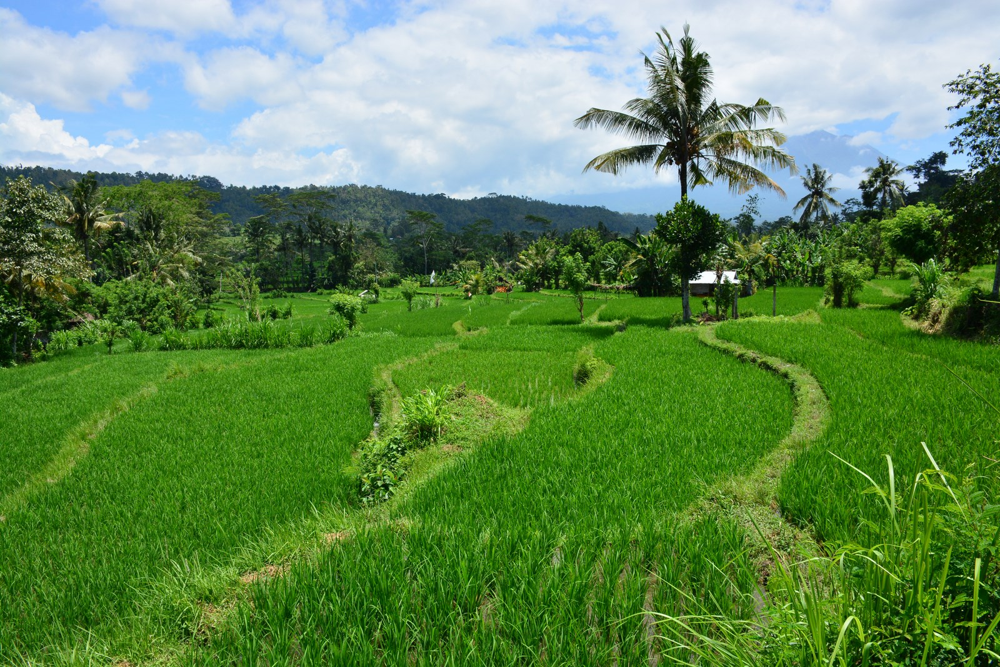

Sebuah proyek sosial kecil untuk membiarkan Bali yang sejati ditemukan — tanpa komisi, tanpa login, tanpa iklan.
SARI adalah aplikasi web statis yang menyajikan informasi wisata lokal Bali di luar zona padat, dilengkapi panduan etika budaya bagi wisatawan. Nama SARI diambil dari kata yang berarti inti atau bunga, sekaligus singkatan:
Kerajinan tangan, tari, musik, dan seni budaya Bali yang hidup di destinasi lokal.
Tradisi, upacara, dan norma kehidupan masyarakat Bali yang perlu dihormati wisatawan.
Kuliner lokal, warung warga, dan keaslian cita rasa di luar zona komersial.
Identitas bangsa yang dikembangkan melalui wisata bertanggung jawab di Bali.
Semua informasi di SARI bersifat informatif dan disarankan untuk memverifikasi langsung ke lokasi sebelum kunjungan. Jam buka, tarif, dan kontak dapat berubah sewaktu-waktu. SARI tidak bertanggung jawab atas perubahan data yang tidak dikabarkan oleh pengelola tempat.
Foto pada situs ini diambil dari Wikimedia Commons dan berlisensi bebas untuk digunakan ulang; terima kasih kepada para fotografer kontributornya.